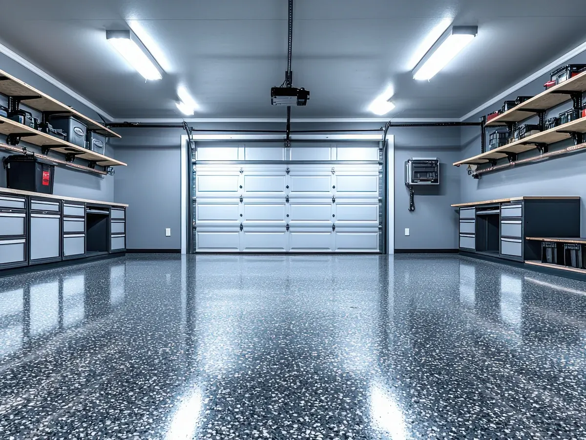
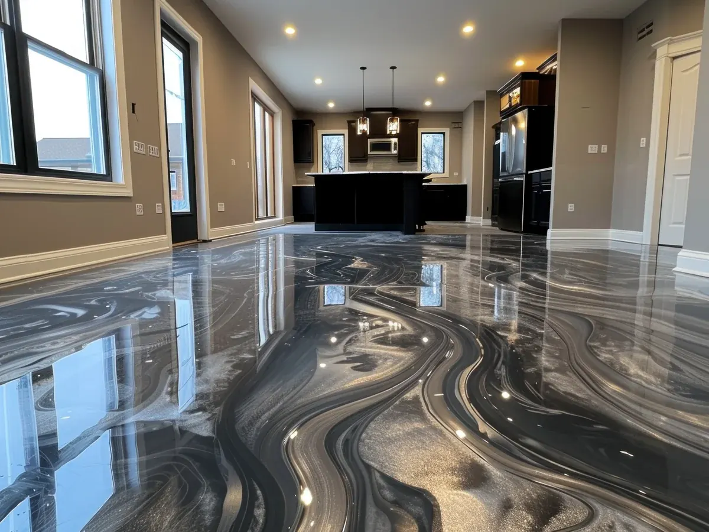
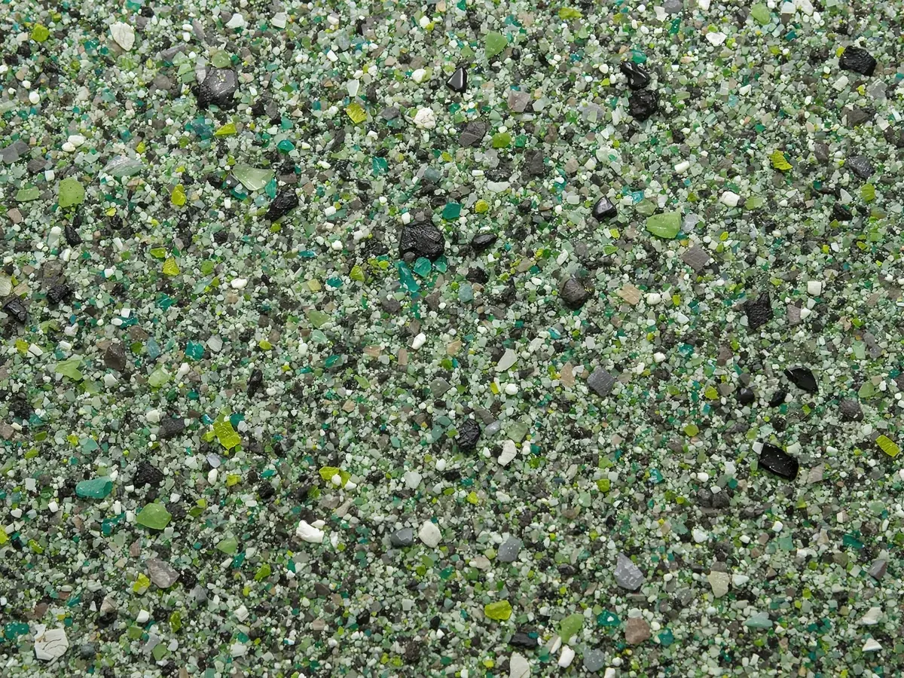
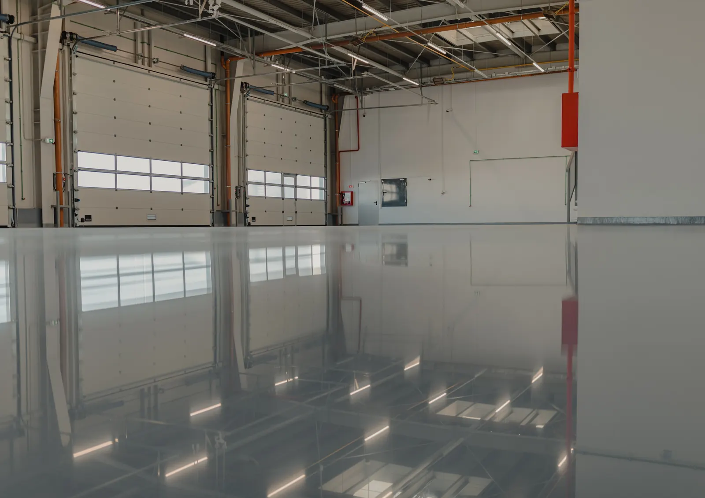
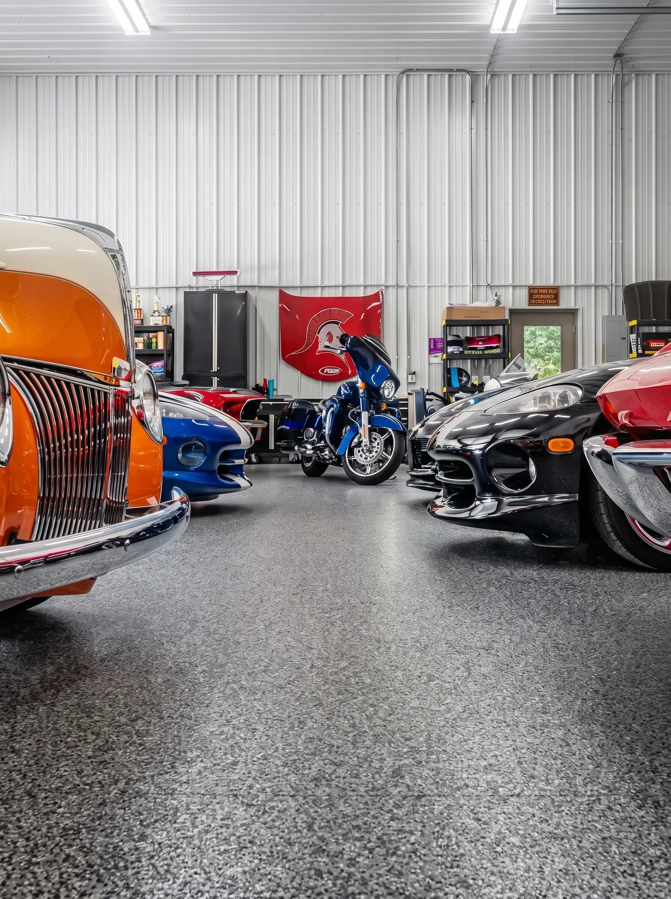
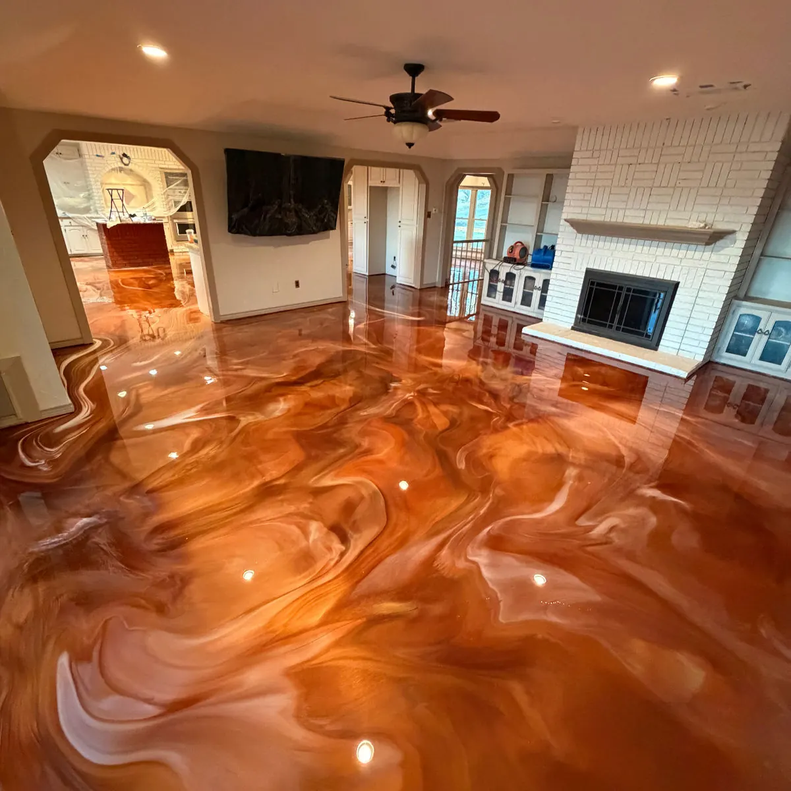
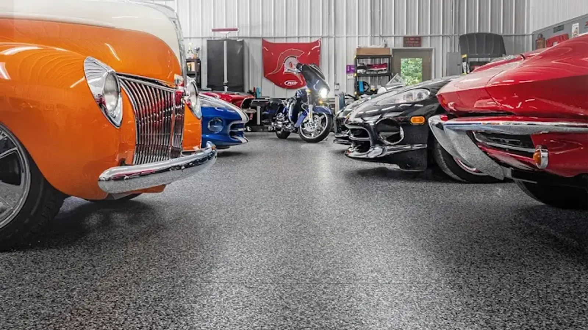
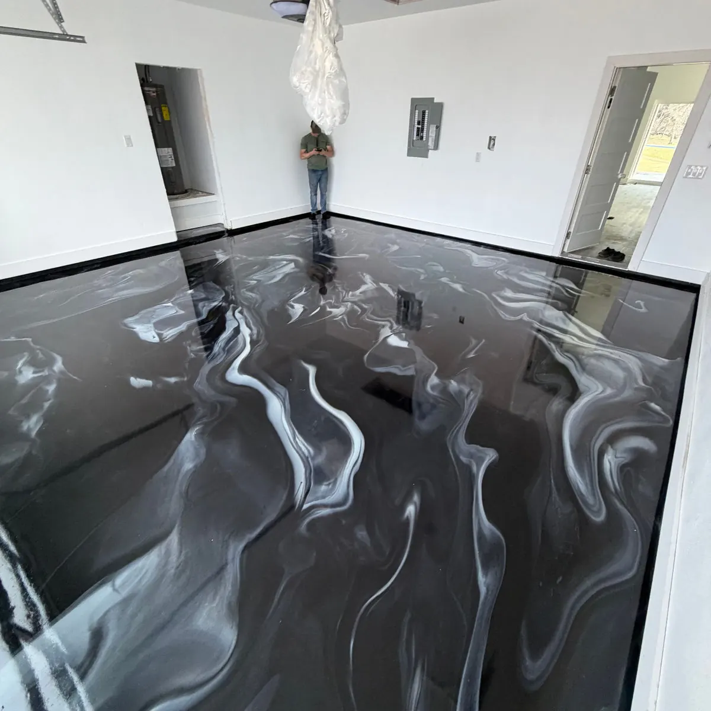

Easier Maintenance
A finished surface is easier to clean and maintain than bare, porous concrete.

Space Up Construction · Natick, Massachusetts
Upgrade bare concrete with professional surface preparation, durable coating systems, and finish options built for how you use the space.
A Better Finish for Concrete
Epoxy flooring creates a finished surface over concrete that can be selected based on the space, traffic, and day-to-day use.
Tell Us About Your Project ↗A finished surface is easier to clean and maintain than bare, porous concrete.
Garages, commercial areas, basements, and workspaces can use coating systems selected for the way each space is used.
Choose from different colors, textures, and flooring systems to match the look and function of the space.
Choose Your Finish
Color, texture, depth, and performance—selected around the space and how it will be used.
A popular option for garages and everyday-use areas, combining texture with a clean, finished look.

Creates visual movement and depth for residential interiors, showrooms, offices, and other decorative applications.

A textured flooring system for areas that may require added grip and durability.

A clean, uniform finish for garages, work areas, commercial spaces, and other concrete surfaces.
Space Up also works with additional coating systems based on the technical needs of the project.
Call (508) 474-9407 ↗Before the Coating Goes Down
Space Up mechanically prepares the surface and addresses areas that need repair before moving forward with the flooring system.
The concrete is prepared to create the proper surface for the coating system.
Cracks, joints, and problem areas are evaluated and addressed when needed.
The selected coating system is installed based on the project and the condition of the surface.
Texture and protective finish options are selected according to how the space will be used.
Residential & Commercial
A practical, finished surface for the places that carry everyday use.

Give bare concrete a cleaner, more finished surface that is easier to maintain.
Turn unfinished concrete into a more complete and usable surface.
A practical flooring option for spaces used by customers, employees, or both.
Coating systems can be selected based on traffic levels and the demands of the space.
Texture and coating systems are selected according to the surface and project conditions.
From Concrete Prep to Finished Floor
Space Up handles the concrete preparation and flooring installation based on the actual condition and use of the space.
Projects
Real projects across residential and commercial spaces, with finish detail you can see.



How to Get Started
Call or email and tell us what type of space you want to improve.
We’ll discuss the surface, how the space is used, and the finish you’re looking for.
Once the scope is clear, we’ll coordinate the next steps for installation.
Epoxy and resinous flooring systems can be used in garages, basements, commercial spaces, work areas, and other suitable concrete surfaces.
Yes. The condition of the concrete is evaluated and the surface must be properly prepared before the coating system is installed.
Yes. Options include flake, metallic, quartz, solid color, and other resinous flooring systems.
Yes. Space Up works with both residential and commercial flooring projects.
Yes. Texture and finish options can be selected based on the needs of the space.
Timing depends on the size of the area, the condition of the concrete, and the flooring system selected. Some garage projects may qualify for one-day installation.
Request an Epoxy Flooring Quote
Call or email Space Up to discuss the space, the condition of the concrete, and the finish you want. The form below is a preview and does not send information.
(508) 474-9407Your Project Can Start With a Call
Tell Space Up about your space and we’ll help you identify the flooring system that fits the project.